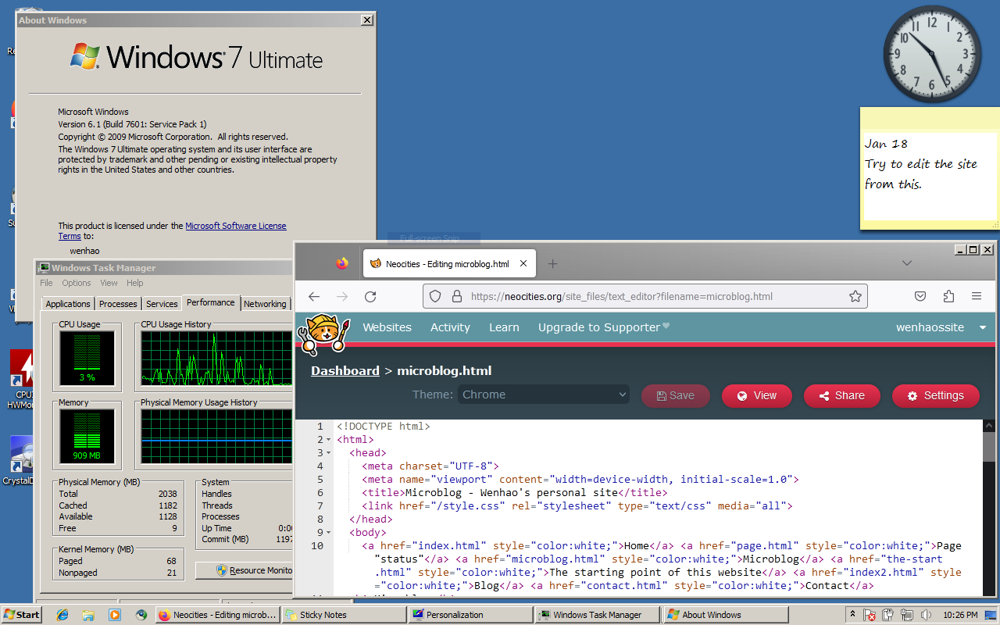

This is a blog page for stuff I think it would never belong onto a standalone place.
01/30/2026
Here's two thing today:
01/25/2026
That's why people should not use Chrome at all
Just noticed uBlock Origin was delisted from Chrome Web Store. It's still on there, but you can't find it through search. pic.twitter.com/qCCJe6BDXd
— Enderman (@endermanch) January 24, 2026
01/23/2026
I think I am the first one to back this site up on the wayback machine.
01/22/2026
Uhh so Youtube is dumb as if you put a video on an iframe doesn't give you ads. Time to watch everything on an iframe and suffer as fullscreen is not allowed.
01/21/2026
Nothing to say at the moment. Imma start an exposé soon.
/\
| (Says the guy who hasn't finished an already started blogpost)
01/20/2026
I've lately been sick of myself. I don't know why tho.
01/18/2026
Writing this from Windows 7 on an Acer Aspire 5315.

01/15/2026
Yeah, no, no thanks Google.I don't think I should do this, but here we go.
01/13/2026
This is strange... Some friends came to me asking how to make a webpage. I heard that they wanted to do some inappropriate stuff so... IDK
01/12/2026
Why the hell are people yelling about football tho
01/08/2026
I kinda agree
The world when it's my turn to become an adult: pic.twitter.com/t0yavp63cz
— Enderman (@endermanch) January 2, 2026
01/06/2026
Time to start the code for the "About me" page.
01/04/2026
Unfortunately, I'm not able to do more stuff at this moment. I wonder why... Actually, am I kidding. The contact page is done.
01/02/2026
Starting to code the "contact" page. It's probably done before easter vacation. Future plans are shown on the "Page "Status""
01/01/2026
Man, I wish this problem wasn't a real thing.
It's 2:15AM right now. I gotta go to bed. Also I think I put too much green on the source code.

12/31/2025
Happy new year! I'm going to post the first article soon!
Edit: I didn't
Just had dinner. I kinda want to know why are timezones a real thing.
12/30/2025
This subpage was created. Probably no more updates until 2026. For now I will still update other parts, but not this.
{kind=link}
{kind=link}